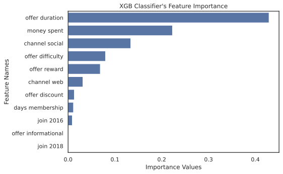

Starbucks Customer Behavior - Rewards App
Description
The project aims to build a robust machine learning model in determining customers behavior of Starbucks rewards mobile app. The data sets provided are simulated version of the rewards mobile app data. The data sets are cleaned, explored, processed into one master DataFrame which is fed into various machine learning models. The data sets contain the types of offers given by the rewards app, customers demographic information, and their transactions.
The machine learning model is selected through exploration of multiple classifiers. The learning curve analysis is used to filter which models would perform best by avoiding underfitting and overfitting. This analysis is then proven further by calculating the confusion matrix metrics.
Result: Model Selection
The XGB Classifier is chosen as the best machine learning model for this classification problem. The accuracy of this model reaches up to 91.43% on training set, further confirmed with confusion matrix to avoid class prediction bias. This can be seen from the following plots of confusion matrix and learning curve. The confusion matrix, which is calculated on the test set, indicates roughly 90% and above for both true negative and true positive.
In a different perspective, this also proves that learning curve analysis can be useful in choosing a model with the best fit through applying multiple training sample sizes and looking at both the training and validation scores. The confusion matrix tested on the test data set and the learning curve for XGB Classifier is shown below.
Result: Feature Importance

The feature importance plot specifies that the three following features to be the most important:
- offer_duration
- money_spent
- channel_social
Finally, the social channel feature. The fact that this comes in the top three features signifies how social channel is the one that people pay more attention to (obviously does not apply for everyone). This can be used as a reasoning for Starbucks to concentrate more on advertising/sending their offers through these social channels, instead of through web for example. One thing to note though, the email channel is not included in the training data since it contains little to no variation between datasets. Therefore, it might interesting to do a little further experiment to see if whether email is a more effective and efficient method of sending Starbucks offers.
Conclusion
Based on these findings, Starbucks can concentrate on campaigning its variety of offers through social channels while maintaining a moderate offer duration for the customers. Trying to find a customer with higher money spent within certain time frames might be beneficial rather than keeping track of their yearly income. As for gender, it does not seem that there should be any preferences for Starbucks to target, as long as these offers are sent based on the parameters discussed.
There are several improvements that can be implemented:
- Perform a thorough experiment:
- This can be performed using A/B Testing where one group consists of people who are exposed to the offers only from web while the other is from social channels.
- Another experiment that concentrates on determining what offer duration to be best for these customers so that Starbucks can design an offer that would specifically target this behavior.
- A better model tuning:
- Due to limitation of computing power (running on local machine), only several parameters of XGB Classifier were successfully tuned. Therefore this model can definitely be improved to a higher accuracy.
- A better step or method in combining the data sets:
- Definitely the main bottleneck of the project, since this process takes a long time to run. It might be beneficial to perform this process using a different method rather than implementing a nested loop.